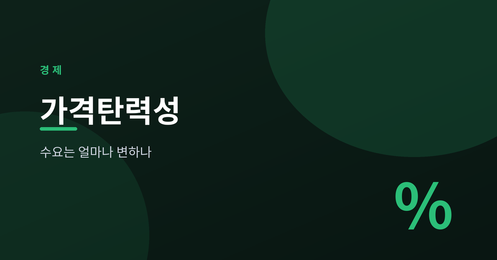
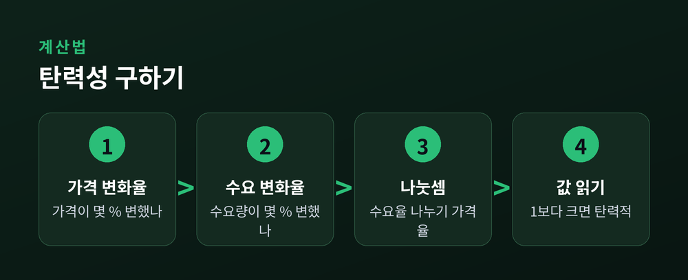
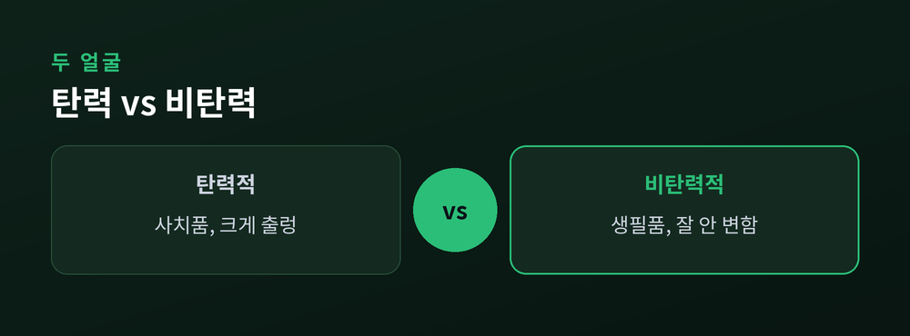
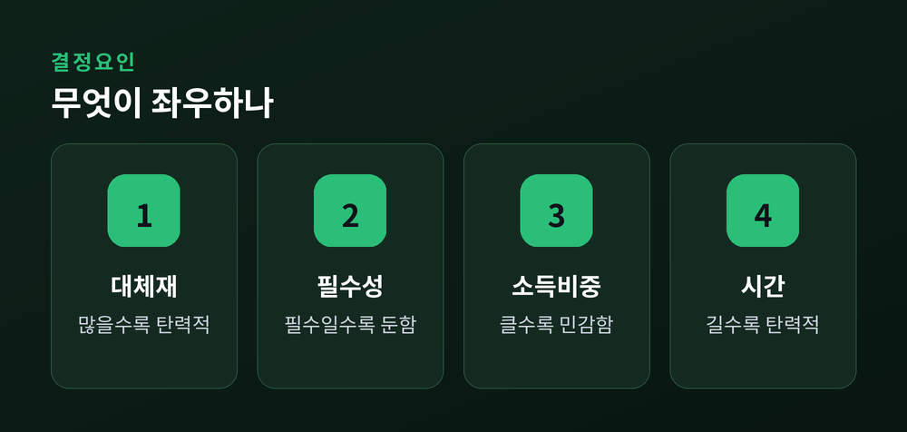
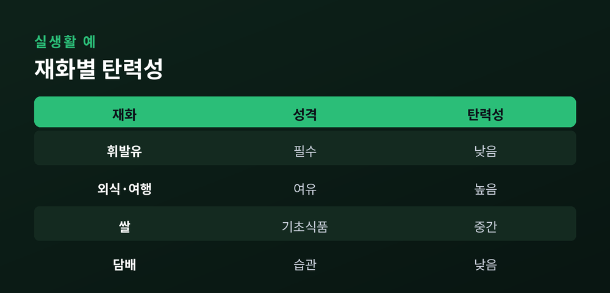

가격이 오르면 수요는 얼마나 줄어드나

이번 글에서는 가격탄력성을 정리해 보겠습니다. 가격이 오르면 사람들이 물건을 덜 산다는 것은 누구나 압니다. 문제는 "얼마나" 덜 사느냐입니다.
그 정도를 숫자로 재는 도구가 바로 수요의 가격탄력성입니다. 개념 자체는 어렵지 않습니다. 차근차근 따라오시면 됩니다.
경제학 교과서 맨 앞자리를 차지하는 이유가 있습니다. 이 하나를 이해하면 기업의 가격 정책부터 세금 설계까지 많은 것이 달리 보입니다.
수요의 가격탄력성은 가격이 1% 변할 때 수요량이 몇 % 변하는지를 나타냅니다.
공식은 단순합니다. 수요량 변화율을 가격 변화율로 나눈 값입니다. 예를 들어 가격이 10% 올랐는데 수요량이 20% 줄었다면, 탄력성은 2가 됩니다.
가격과 수요량은 반대로 움직입니다. 그래서 실제 계산값에는 마이너스 부호가 붙습니다만, 보통은 크기만 따져 절댓값으로 읽습니다.
이 값이 1보다 크면 탄력적, 1보다 작으면 비탄력적이라 부릅니다. 딱 1이면 단위 탄력적인 셈입니다.

같은 10% 인상이라도 상품에 따라 반응이 전혀 다릅니다.
사치품을 떠올려 보겠습니다. 값이 오르면 소비자는 구매를 미루거나 포기합니다. 없어도 당장 곤란하지 않기 때문입니다. 수요가 크게 출렁이는 탄력적인 상품입니다.
반대로 생필품은 어떨까요. 소금이나 상비약은 값이 올라도 쓰던 만큼 씁니다. 줄이기가 어렵습니다. 수요가 좀처럼 흔들리지 않는 비탄력적인 상품입니다.
예전엔 가격이 오르면 무조건 매출이 준다고 여겼습니다. 지금은 상품의 성격부터 살펴야 한다고 생각합니다.

그렇다면 어떤 상품이 탄력적이고 어떤 상품이 비탄력적일까요. 몇 가지 기준으로 가늠할 수 있습니다.
첫째는 대체재의 유무입니다. 비슷한 대체품이 많으면 값이 오를 때 갈아타기 쉽습니다. 탄력성이 커집니다.
둘째는 필수성입니다. 생활에 꼭 필요한 재화일수록 반응이 둔합니다.
셋째는 소득에서 차지하는 비중입니다. 지출의 큰 몫을 차지하는 물건일수록 가격에 민감해집니다. 껌 한 통 값에는 무덤덤하지만 자동차 값에는 예민해지는 이치입니다.
넷째는 시간입니다. 당장은 대안을 찾기 어려워도, 시간이 지나면 소비자는 방법을 찾아냅니다. 그래서 대체로 장기 탄력성이 단기보다 큽니다.

탄력성이 실전에서 빛나는 대목이 바로 여기입니다. 가격을 올리면 매출은 늘까요, 줄까요. 답은 탄력성에 달려 있습니다.
비탄력적인 상품이라면 이야기가 간단합니다. 값을 올려도 수요가 별로 줄지 않으니 총수입은 늘어납니다.
탄력적인 상품은 정반대입니다. 조금만 올려도 손님이 크게 빠져나가 총수입이 줄어듭니다. 이런 상품은 오히려 값을 낮춰 판매량을 키우는 편이 낫습니다.
물론 현실은 이보다 복잡합니다. 경쟁사의 대응, 브랜드 이미지, 비용 구조가 함께 얽힙니다. 다만 첫 방향을 잡는 나침반으로 탄력성만 한 것이 없습니다.
개념을 실생활 재화에 대보면 감이 더 또렷해집니다.
담배나 휘발유는 대표적인 비탄력 재화로 꼽힙니다. 습관이나 필수적 쓰임이 강해 값이 올라도 소비를 줄이기 어렵습니다.
외식이나 여행은 탄력적인 편입니다. 형편이 빠듯하면 가장 먼저 줄이는 항목입니다.
쌀 같은 기초 식품은 그 중간 어디쯤에 자리합니다. 꼭 필요하지만 무한정 더 먹지는 않기 때문입니다.

탄력성은 수요에만 쓰이지 않습니다. 곁가지 개념 몇 가지만 짚어두겠습니다.
공급의 가격탄력성은 값이 오를 때 생산자가 공급을 얼마나 늘리는지를 봅니다. 공장을 금방 늘리기 어려운 상품일수록 공급은 비탄력적입니다.
교차탄력성은 다른 상품의 가격이 내 상품 수요에 미치는 영향입니다. 커피값이 오를 때 홍차 수요가 느는 관계가 그 예입니다.
소득탄력성은 소득이 늘 때 수요가 얼마나 변하는지를 봅니다. 소득이 늘수록 더 찾는 재화가 있고, 오히려 덜 찾는 재화도 있습니다.
정리하면 이렇습니다. 가격탄력성은 "가격 한 번의 변화에 수요가 얼마나 놀라는가"를 재는 자입니다.
숫자 하나에 불과하지만, 그 안에는 소비자의 습관과 선택, 기업의 셈법이 모두 담겨 있습니다. 다음에 어떤 물건의 값이 올랐다는 소식을 접하신다면, 잠깐 이렇게 물어보시길 권합니다. 이 상품은 과연 탄력적인가, 비탄력적인가.